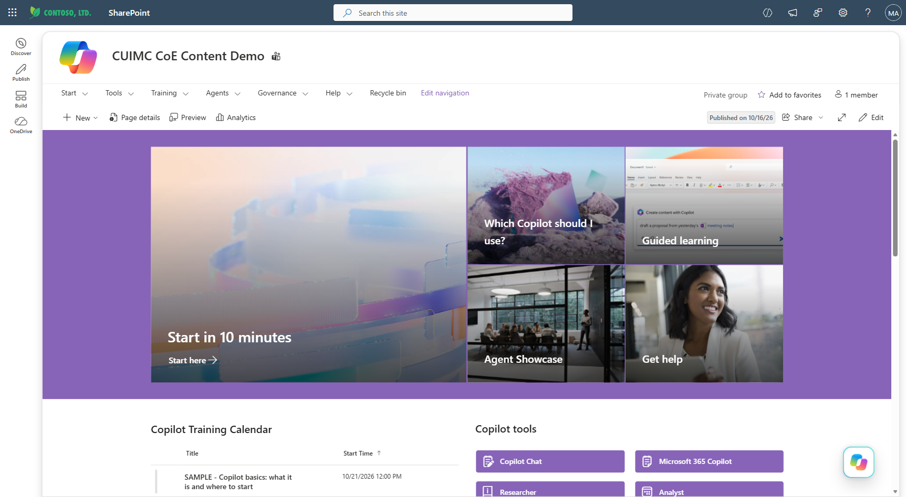
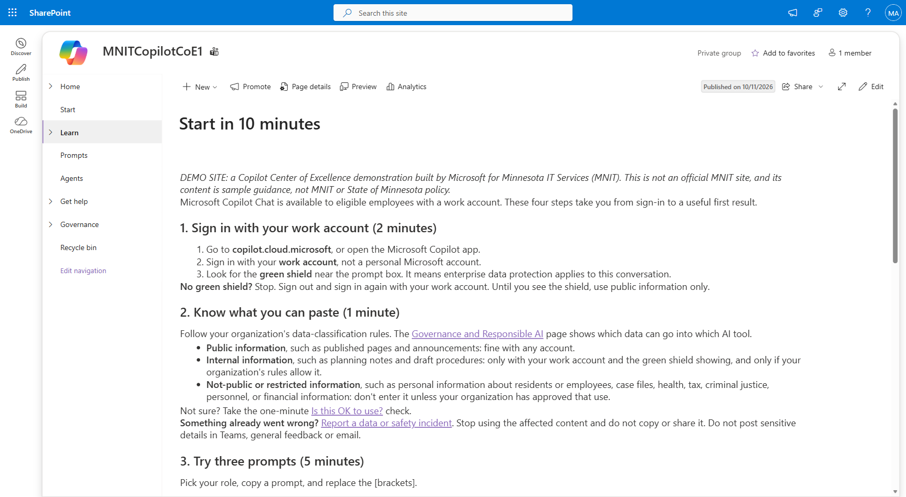
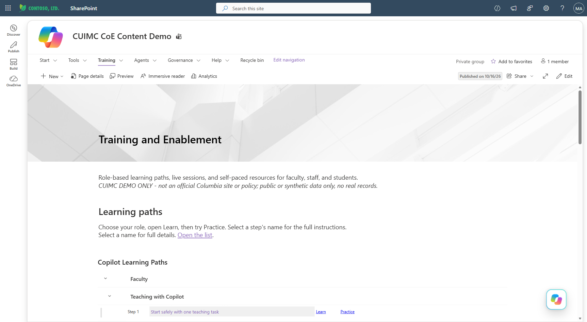
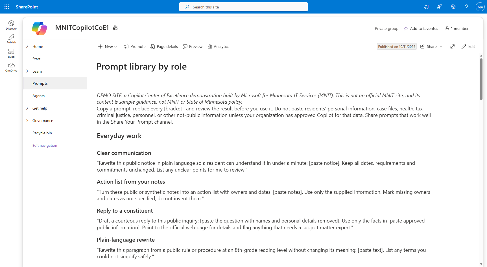
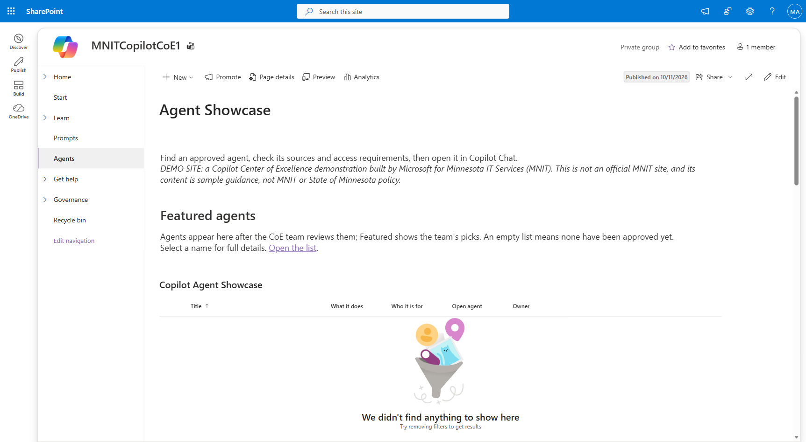
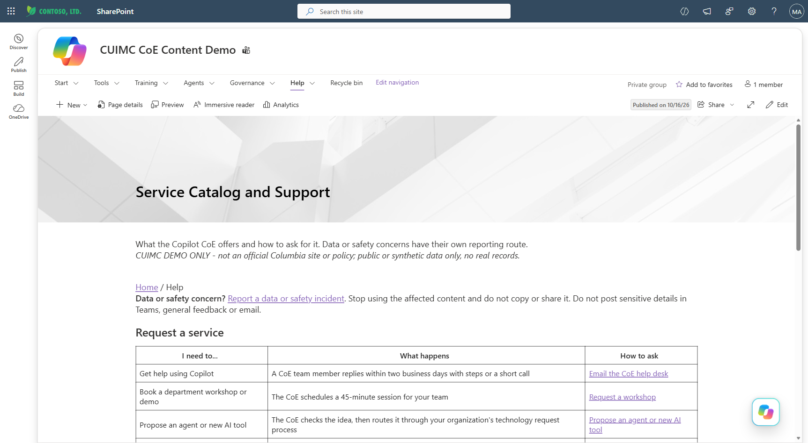
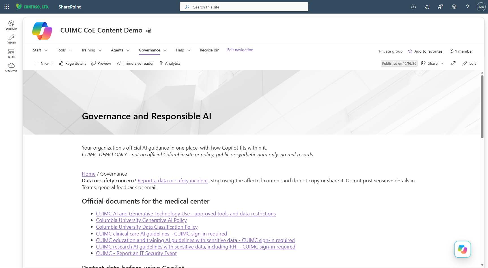
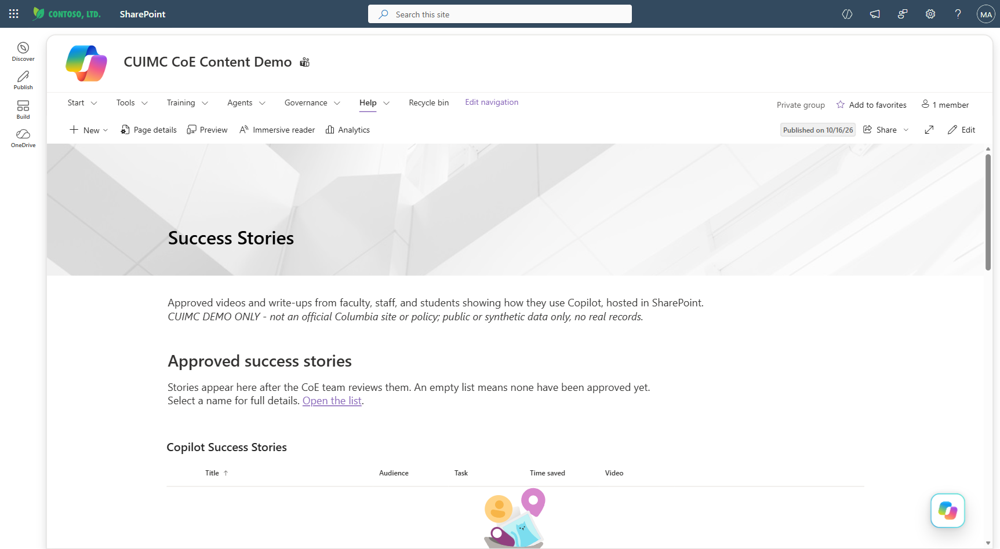
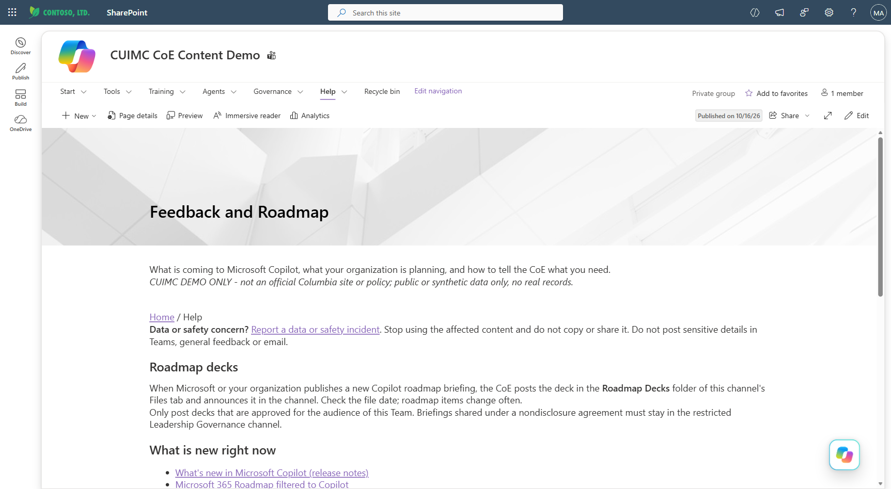

Inside a Microsoft 365 Copilot CoE site
The CoE brings Microsoft Teams and SharePoint together so users can find training, prompts, reviewed agents, guidance, and support in one place.
01Home — five places to start

Home in the site menu)The home page has five tiles: Start in 10 minutes, Learning paths by role, Prompt library by role, Agent Showcase, and Get help. Each tile leads to a common task. This is a demo site admins can customize, but the contents of the site do not reflect the current deployment institution's official policy.
02Start in 10 minutes — a first-use guide

Start in the site menu → Guide-Start-in-10-Minutes.aspxFour short steps walk new users through signing in, reviewing their organization's data guidance, trying a prompt for their role, and reviewing the response. Users can try a first task without signing up for a course.
03Learning paths by role — relevant training

Learn in the site menu → CoE-Training-and-Enablement.aspxTraining is grouped by role so users can find relevant sessions, resources, and prompts to practice with. The page organizes training resources; it does not track completion. Organizations can continue using their existing learning system for that purpose.
04Prompt library by role — 230 examples to adapt

Prompts in the site menu → Guide-Prompt-Library.aspxThe library contains 230 prompts organized by role and task. Users can copy a prompt, replace the bracketed fields, and adapt it to their work. Admins can add organization-specific CSV files to extend or replace the supplied prompts without editing the kit.
05Agent Showcase — reviewed agents and their owners

Agents in the site menu → CoE-Agent-Showcase.aspxEach listing identifies the agent's data sources, access requirements, and owner. Users can check whether an existing agent meets their needs before requesting another one. New submissions go through content approval before publication and remain visible only to reviewers until approved.
06Get help — separate routes for different requests

Get help in the site menu → CoE-Service-Catalog-and-Support.aspxA service table shows users where to go for help using Copilot, license requests, training requests, new agent proposals, and data or safety concerns. The table lists the contact or submission link for each request type, with data and safety reports listed separately from general feedback.
07Governance and Responsible AI — data rules and responsibilities

Governance in the site menu → CoE-Governance-and-Responsible-AI.aspxThis page addresses a common question: “Can I put this data into Copilot?” The page includes sample data-classification guidance, an agent risk model, and a RACI showing example decision ownership. Organizations replace these examples with their approved policies, classifications, roles, and responsibilities.
08Success Stories — examples from colleagues

Users can submit short videos showing how they use Copilot in their work. Submission guidance excludes sensitive or regulated information, requires consent from everyone shown, and requires captions. Stories go through content approval before publication.
09Feedback and Roadmap — product updates and local plans

The page brings together Microsoft's Copilot release notes and roadmap with the organization's own rollout milestones. The accompanying Teams channel gives users a place to suggest changes and flag missing resources.
Get the kit
The site is deployed through a PowerShell-based kit. Organization-specific settings are kept separately from the deployment scripts, making the kit easier to reuse and update.
For administrators
- Private by default. The Team is private, and external SharePoint sharing is disabled unless an admin explicitly enables it for a reviewed lab preview. See the sharing addendum for exactly where that switch lives and how to add one external guest as a read-only visitor.
- Interactive provisioning. The kit uses delegated sign-in through a tenant-owned Entra app, with no certificates or stored secrets.
- Update and removal scripts. The update script republishes edited content. The removal script tears down the deployment, with soft deletion by default.
- Post-install validation. A test script checks pages, navigation, catalogs, permissions, and links before a deployment is considered complete.
github.com/ganymededl/CopilotCoE-Kit · v3.6 release (includes the vendor site template) · Addendum: sharing this site with an external guest →
About the screenshots: they come from a demo tenant used to validate the kit, not a customer production site.
The on-page banner identifies the content as sample guidance, not official policy.